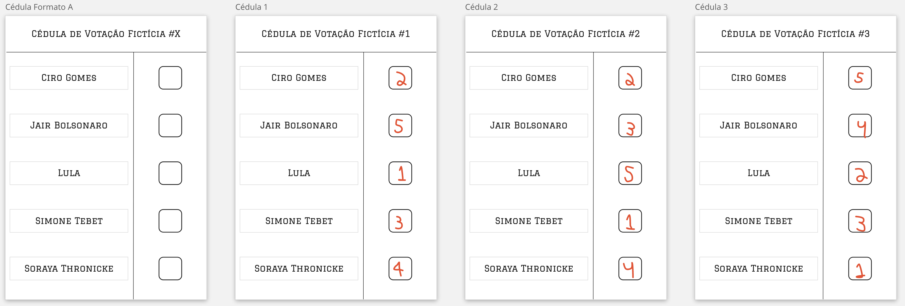

Temática: Grafos acíclicos direcionados (DAG), relacionados à pesquisa do autor com modelos causais que também são DAG
Existem diversas organizações, coletivos, federações, e outros orgãos coletivos que possuem representantes eleitos por votação. O nosso próprio país é um desses exemplos, e está, no momento da elaboração desse trabalho, no meio de um desses processos eleitorais. Não existe somente uma maneira de realizar eleições, podendo ter métodos variados com diferentes critérios.
Um desses métodos é conhecido como o Método Schulze, desenvolvido em 1997 por Markus Schulze, que seleciona um vencedor único usando votos de preferências, ou uma seleção ordenada de vencedores. Existem outros nomes para esse método como Schwartz Sequential Dropping (SSD), Beatpath Method, Path Winner, entre outros. O método escolhe um vencedor que é preferido por uma maioria sobre todos os outros em uma comparação por pares.
O Método Schulze é utilizado por diversas organizações como Ubuntu, Debian, Gentoo, a cidade de Turin - Itália, e o distrito de Southwark em Londres.
Nesse método de votação, ao invés de cada eleitor escolher um candidato em uma seleção de $N$ candidatos, o eleitor ordena uma subseleção com $M$ desses candidatos, do que mais prefere para o que menos prefere, como mostra o modelo e exemplos abaixo.

A partir de votos como esse, é possível então contabilizar quantos eleitores preferem um candidato $A$ a um candidato $B$. Seguindo o exemplo da imagem acima, comparando Ciro Gomes com Simone Tebet, podemos ver que Ciro está melhor rankeado na cédula 1, enquanto Tebet está melhor nas cédulas 2 e 3. Podemos dizer, então, que Ciro possui 1 cédula em sua vantagem na comparação com Simone, que por sua vez tem 2 cédulas em vantagem em relação a Ciro.
Supondo que existam mais cédulas, como 50, e analisar caso a caso, é possível então montar uma matriz como a abaixo, onde cada célula informa qual a quantidade de cédulas que possui o candidato na linha $i$ em relação ao candidato na coluna $j$.
Essa matriz, poderia ser representado por um grafo $G = (V,E)$ onde $V$ são os vértices com os candidatos e $E$ as arestas direcionados com o peso da quantidade de cédulas preferindo um candidato $A$ em detrimento de um $B$.
A partir do grafo é possível ter caminhos diferentes entre dois candidatos $A$ e $B$. A força de um caminho é determinado pelo seu link mais fraco, ou seja, o menor valor de aresta no caminho.
Por exemplo, considere os caminhos Tebet -> Soraya. Temos um caminho Tebet - Lula - Soraya que possui valores de arestas, respectivas, 1 - 2. Também tem um caminho Tebet - Ciro - Soraya, com arestas 6 - 9. No primeiro caso, a força do caminho é 1, pois é $1$ o menor valor no caminho. No segundo caso, é $6$.
A partir do cálculo do caminho mais forte, podemos ter uma nova matriz $P$ calculada, com o caminho mais forte entre todos os pares de candidatos.

Agora a saída do método de Schulze pode ser determinada. Por exemplo, comparando Bolsonaro com Tebet, temos que Bolsonaro > Tebet, visto que $P[$Bolsonaro$][$Tebet$] = 31 > P[$Tebet$][$Bolsonaro$] = 19$. A imagem mostra de forma colorida em verde quem venceu o embate individual, e vermelho quem o perdeu.
Comparando os vencedores dos embates individuais é possível então determinar que Lula $>$ Tebet $>$ Ciro $>$ Bolsonaro $>$ Soraya.
Existem situações que podem ocasionar empate e que podem ser tratados. Entretanto, para simplificar, não o trataremos nesse trabalho, ignorando os empates e a interpretação do resultado em si.
Veja esse vídeo do YouTube.
Dado uma entrada $X$, sendo $X$ uma matriz quadrada de dimensão $C$ (sendo $C$ o número de candidatos participantes), e $X[i,j]$ o número de votantes que prefere o candidato i ao candidato j, o algoritmo retorna uma saída $F$ que é uma matriz quadrada de dimensão $C$ onde $C[i,j]$ é a força do caminho mais forte entre o candidato i e candidato j.
Esse algoritmo é uma versão adaptada do algoritmo de Floyd-Warshall, que calcula o caminho mais curto (ou mais longo) entre todos os pares de vértices em um grafo direcionado.
Funções triviais de mínimo e máximo foram implementadas e utilizadas. Ambas possui complexidade $\Theta(1)$, por se tratar de uma única comparação realizada.
fn max(a: i32, b: i32) -> i32 {
return if a > b { a } else { b };
}
fn min(a: i32, b: i32) -> i32 {
return if a < b { a } else { b };
}
A primeira etapa do algoritmo é a de limpeza de arestas que possui uma aresta de sentido sentido oposto mas com um valor maior. Essa etapa é apenas uma preparação do algoritmo em si, não sendo considerada para a análise. Sua complexidade é $\Theta(n^2)$ onde $n$ é o número de candidatos, ou o número de nós do grafo, uma vez que o grafo está sendo representado como uma matriz de arestas, e portanto, se tratando de um array bidimensional, precisa ser percorrido em todas as suas posições.
pub fn prepare_graph(graph: &Vec<Vec<i32>>) -> Vec<Vec<i32>> {
let contestants_amount: usize = (*graph).len();
let mut strong_links: Vec<Vec<i32>> = vec![vec![0; contestants_amount]; contestants_amount];
for i in 0..contestants_amount {
for j in 0..contestants_amount {
if i == j {
continue;
}
if *graph[i][j] > *graph[j][i] {
strong_links[i][j] = *graph[i][j];
}
}
}
return strong_links;
}
Conforme descrito nas seções acima, o algoritmo possui uma matriz de arestas como estrutura de dado para cada par de vértices do grafo. Dessa maneira, a matriz será uma matriz quadrada de dimensão $N x N$ onde $N$ é a quantidade de candidatos no processo.
A versão iterativa do algoritmo faz com que o grafo de resultados preparado seja percorrido a cada $C$ vezes a cada célula buscando o caminho mais forte.
pub fn schulze_iterative(graph: &Vec<Vec<i32>>) -> Vec<Vec<i32>> {
let contestants_amount: usize = (*graph).len();
let mut strong_links: Vec<Vec<i32>> = prepare_graph(graph);
for i in 0..contestants_amount {
for j in 0..contestants_amount {
if i == j { continue; }
for k in 0..contestants_amount {
if !(i != k && j != k) { continue; }
let weakest_edge = min(strong_links[j][i], strong_links[i][k]);
let strength = max(strong_links[j][k], weakest_edge);
strong_links[j][k] = strength;
}
}
}
return strong_links;
}
A eficência de tempo é analisada determinando o número de repetições da operação básica como uma função do tamanho da entrada: $T(n) \approx C_{op}C(n)$ onde $T(n)$ é o tempo de execução, $n$ o tamanho da entrada, $C_{op}$ o tempo de execução da operação básica e $C(n)$ o número de vezes que a operação básica é executada.
A operação básica do algoritmo é a comparação entre dois números inteiros. Ou seja, $C_{op} = C_{comp}$ que representa o custo dessa comparação.
O número de vezes que a operação básica é executada depende do tamanho da entrada, visto que existe loops que executam o "tamanho da entrada vezes" contendo a operação básica em seu corpo.
A operação básica é executada 4 vezes a cada iteração, em todos os cenários, não possuindo uma diferença de melhor caso, pior caso e caso médio. As comparações são realizadas no primeiro if do corpo do loop mais interno e uma vez cada nas funções de min e max.
Temos então que $C(n) = \sum_{i=0}^{n-1}\sum_{j=0}^{n-1}\sum_{k=0}^{n-1}4$
$C(n) = 4\sum_{i=0}^{n-1}\sum_{j=0}^{n-1}\sum_{k=0}^{n-1}1$
$C(n) = 4\sum_{i=0}^{n-1}\sum_{j=0}^{n-1}n$
$C(n) = 4\sum_{i=0}^{n-1}(n)(n)$
$C(n) = 4(n)(n)(n)$
$C(n) = 4n^{3}$
Logo, temos que:
$T(n) \approx 4\ C_{comp}\ n^{3}$
Essa função $T(n) \in O(g(n))$ se é limitada superiormente por uma constante múltipla de $g(n)$ para todos $n$ suficientemente grande. Portanto, vamos provar formalmente que $T(n) \in O(n^{3})$. Como $T(n) = C(n)*C_{comp}$ onde $C_{comp}$ é uma constante, ignoraremos a parte da constante.
$t(n) \leq cg(n)$ para todos $n \geq n_{0}$
Pegando $c = 5$ e $n_{0} = 1$, podemos afirmar que:
$4n^{3} \leq 5n^{3}$ para todo $n \geq 1$
O algoritmo portanto é $O(n^{3})$
Essa função $T(n) \in \Omega(g(n))$ se é limitada inferiormente por uma constante múltipla de $g(n)$ para todos $n$ suficientemente grande. Portanto, vamos provar formalmente que $T(n) \in \Omega(n^{3})$. Novamente, ignoraremos a parte da constante do custo de comparação.
De forma similar, também podemos provar que $T(n) \in \Omega(n^{3})$
$t(n) \geq cg(n)$ para todos $n \geq n_{0}$
Pegando $c = 1$ e $n_{0} = 1$, podemos afirmar que:
$4n^{3} \geq n^{3}$ para todo $n \geq 1$
O algoritmo portanto é $\Omega(n^{3})$
A função $T(n) \in \Theta(g(n))$ se é limitada tanto inferiormente ou superiormente por contantes positivas mútiplas de $g(n)$ para todos $n$ suficientemente grande.
Temos então que:
$c_{2}g(n) \leq t(n) \leq c_{1}g(n)$ para todos $n \geq n_{0}$
Pegando $c_{1} = 10$, $c_{2} = 2$ e $n_{0} = 1$, podemos afirmar que:
$2n^{3} \leq 4n^{3} \leq 10n^{3}$ para todo $n \geq 1$
O algoritmo portanto é $\Theta(n^{3})$
As imagens baixo mostram o comportamento do algoritmo em benchmarks de execuções reais. Com a ajuda de uma função geradora de matrizes de entrada válidas, foi executado o algoritmo com entradas $E = {2,4,6,10,15,20,30,50,75,100,125,150,175,200,250,300,400,500,600,700}$. Foi adicionado um contador de comparações do loop mais interno e o tempo de execução computado como abaixo:
pub fn schulze_iterative((...)) {
(...)
let start = std::time::Instant::now();
let mut comparisons: u32 = 0;
for i in 0..contestants_amount {
for j in 0..contestants_amount {
(...)
for k in 0..contestants_amount {
(...)
comparisons += 4;
}
}
}
let duration = start.elapsed();
(...)
}
Uma vez coletados, os dados foram plotados nos gráficos abaixo, em função da quantidade de comparações realizadas e do tempo em segundos. Duas outras equações de referência mostram que o comportamento está coerente com a análise feita, utilizando constantes arbitrárias.


Assim como a versão iterativa, o algoritmo recursivo faz com que o grafo de resultados preparado seja percorrido a cada $C$ vezes a cada célula buscando o caminho mais forte.
pub fn schulze_recursive_step(strong_links: &mut Vec<Vec<i32>>, j: usize, k: usize, i: usize) -> i32 {
// Base Condition
if i == 0 {
return strong_links[j][k];
}
// Diagonal
if k == j {
return 0;
}
let weakest_edge = min(schulze_recursive_step(strong_links, comparisons, j, i, i-1), schulze_recursive_step(strong_links, comparisons, i, k, i-1));
let strength = max(schulze_recursive_step(strong_links, comparisons, j, k, i-1), weakest_edge);
return strength;
}
/// Recursive version of Schulze algorithm.
pub fn schulze_recursive(graph: &Vec<Vec<i32>>) -> Vec<Vec<i32>> {
let contestants_amount: usize = (*graph).len();
let mut strong_links: Vec<Vec<i32>> = prepare_graph(graph);
for a in (0..contestants_amount).rev() {
for b in (0..contestants_amount).rev() {
strong_links[a][b] = schulze_recursive_step(&mut strong_links, a, b, contestants_amount - 1);
}
}
return strong_links;
}
Assim como na seção da versão iterativa, a operação básica é a comparação de dois inteiros.
O tamanho da entrada, que é a quantidade de candidatos, é passsado como o último argumento da função, o i.
A relação de recorrência é dada abaixo:
{
$C(0) = 1$
$C(n) = 3 C(n - 1) + 3$ para n > 0
}
$C(0) = 1$
$C(1) = 3C(1-1) + 3 = 3(1) + 3 = 6$
$C(2) = 3C(2-1) + 3 = 3(6) + 3 = 21$
$C(3) = 3C(3-1) + 3 = 3(21) + 3 = 66$
$C(4) = 3C(4-1) + 3 = 3(66) + 3 = 201$
$C(5) = 3C(5-1) + 3 = 3(201) + 3 = 606$
$C(n) = \dfrac{15 \times 3^n - 9}{6}$
$C(n) = \dfrac{5 \times 3^n - 3}{2}$
$C(n) = 3 \times C(n - 1) + 3$
$C(n-1) = 3 \times C(n-2) + 3$
$C(n-2) = 3 \times C(n-3) + 3$
$C(n-3) = 3 \times C(n-4) + 3$
$C(n) = 3 \times (3 \times C(n - 1) + 3) + 3$
$= 9 \times C(n-1) + 12$
$= 9 \times (3 \times C(n-2) + 3) + 12$
$= 27 \times C(n-2) + 39$
$= 27 \times (3 \times C(n-3) + 3) + 39$
$= 81 \times C(n-3) + 120$
...
$C(n) = 3^{k} \times C(n -k) + ?$ (Não consegui desenvolver)
Passo base: suponha que $C(n) = \dfrac{5 \times 3^n - 3}{2}$ seja uma fórmula válida para a recorrência definida pra $n = 1,2,3...n$. Ela também precisa ser válida para $k = n + 1$
$C(n+1) = 3 \times C(n) + 1$ ... (Relação de recorrência)
$= 3 \times (\dfrac{5 \times 3^n - 3}{2}) + 3$ ... (Hípotese de indução)
$= 3 \times (\dfrac{5}{2} \times \dfrac{3^n}{2} - \dfrac{3}{2}) + 3$ ... (Hípotese de indução)
$= (\dfrac{15 \times 3^{n}-9}{2}) + \dfrac{6}{2}$
$= \dfrac{15 \times 3^{n}-3}{2} $
$= \dfrac{(5 \times 3) \times 3^{n}-3}{2} $
$= \dfrac{5 \times 3^1 \times 3^{n}-3}{2} $
$= \dfrac{5 \times 3^{n+1}-3}{2} $
Portanto, $C(N) = \dfrac{5\times 3^{n} - 3}{2}$ é uma fórmula fechada válida para a recorrência definida para qualquer $k \in \N$.
Comparando a complexidade do algoritmo com a classe de complexidade $3^{n}$ temos que
$lim_{n \to \infty} \dfrac{t(n)}{g(n)}$
onde $t(n) = \dfrac{5\times 3^{n} - 3}{2}$ e $g(n) = 3^{n}$
$=> lim_{n \to \infty} \dfrac{\dfrac{5\times 3^{n} - 3}{2}}{3^n}$
$= 0.5 \lim_{n \to \infty} -3^{1-x}+5$
$= 0.5 (\lim_{n \to \infty} -3^{1-x} + \lim_{n \to \infty}5)$
$= 0.5 ((0) + (5))$
$= \dfrac{5}{2}$
Por definição, se o resultado do limite é uma constante, implica que $t(n)$ possui a mesma ordem de crescimento de $g(n)$. Dessarte, $t(n) \in \Theta(n^3)$.
O teorema mestre não pode ser aplicado pois ele só permite resolver recorrências da forma $T(n) = aT(n/b) + f(n)$ para $a > 0$ e $b > 1$. No caso de estudo, o algoritmo não tem a parte da divisão, sendo portanto $b = 1$, o que invalida a condição para aplicar o teorema.
As imagens baixo mostram o comportamento do algoritmo em benchmarks de execuções reais, realizadas da mesma maneira que a versão iterativa. Foi executado o algoritmo com entradas $E = {2,3,4,5...15}$. Uma vez coletados, os dados foram plotados nos gráficos abaixo, em função da quantidade de comparações realizadas e do tempo em segundos. Duas outras equações de referência mostram que o comportamento está coerente com a análise feita, utilizando constantes arbitrárias.